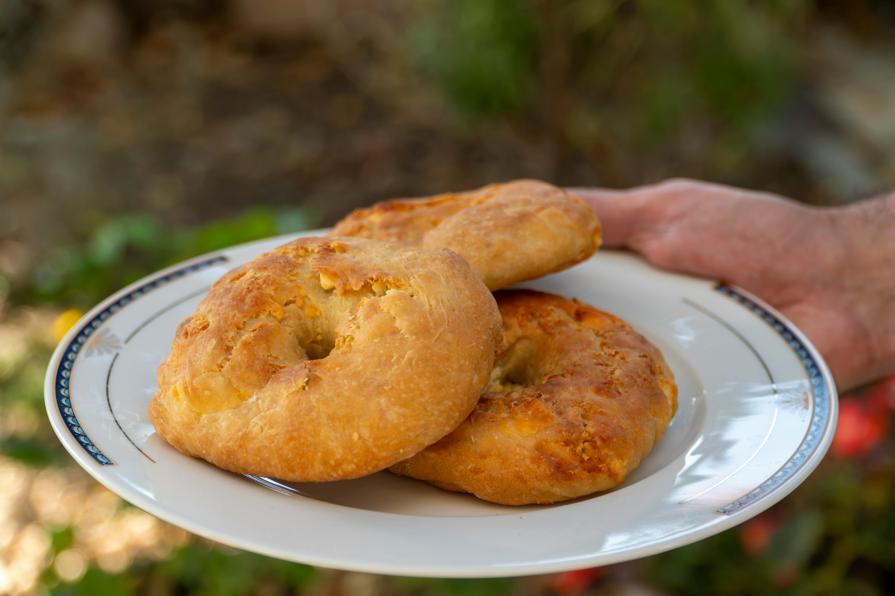
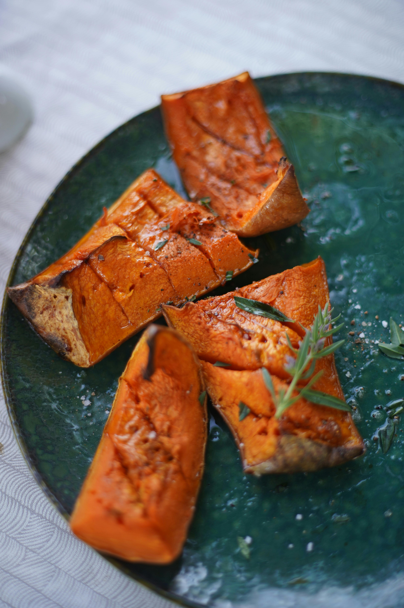
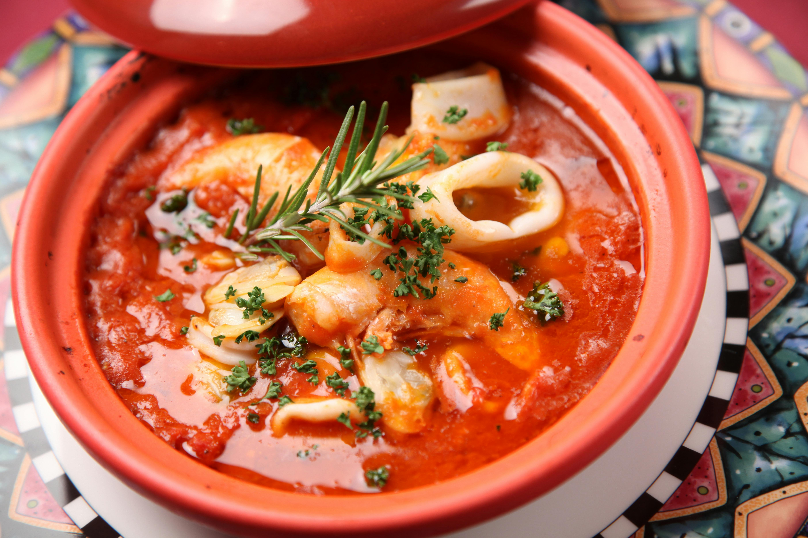

Gulab Jamun
Ingredients
- Milk powder
- All-purpose flour
- Baking soda
- Sugar
- Ghee
Recipe
- Prepare sugar syrup by boiling sugar and water; keep it warm.
- Mix milk powder, flour, and baking soda to form a soft dough.
- Shape small balls and fry slowly in ghee until golden brown.
- Soak hot gulab jamuns in warm syrup and serve.

Rasmalai
Ingredients
- Milk
- Lemon juice
- Sugar
- Cardamom
- Saffron
Recipe
- Boil milk and curdle it using lemon juice to prepare chenna.
- Form flat discs and cook them in sugar syrup until soft.
- Prepare thickened flavored milk with saffron and cardamom.
- Soak chenna discs in the flavored milk and chill before serving.

Kala Jamun
Ingredients
- Khoya
- Paneer
- All-purpose flour
- Sugar
- Ghee
Recipe
- Mix khoya, paneer, and flour to make a smooth dough.
- Shape into balls and deep fry on low heat until dark brown.
- Prepare sugar syrup flavored with cardamom.
- Soak fried jamuns in warm syrup for enhanced taste.
